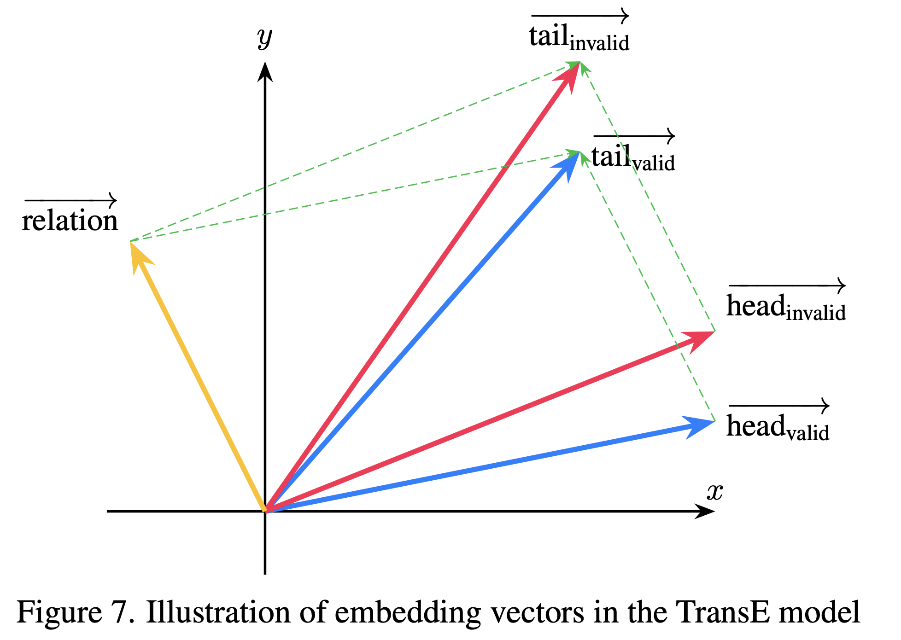

GAT introduces masked multi-head self-attention to graphs by allowing each node to attend only to its immediate neighbors. This avoids unnecessary computation and preserves graph structure.
Given initial entity embeddings \( \mathbf{E} = \{\overrightarrow{e_1}, ..., \overrightarrow{e_{N_e}} \} \), the model linearly transforms them and computes attention scores only among first-order neighbors:
These raw scores are normalized with softmax:
Finally, embeddings are updated by aggregating neighbors’ representations:
Multi-head attention further improves stability by either concatenating or averaging the outputs of multiple attention heads. GAT is especially effective for graph-structured data without requiring matrix inversion or dense adjacency.
In knowledge graphs, entities often play multiple roles depending on their relations. To capture this context, the KBGAT model extends GAT by integrating both relation and neighboring features into the attention mechanism.
KBGAT follows an encoder-decoder framework: entity embeddings are initialized using TransE, enhanced via GAT-based encoder, and scored through a ConvKB decoder:
The initial embeddings are learned using the TransE principle:
where \( \vec{h} \) and \( \vec{t} \) are the head and tail entity embeddings, and \( \vec{r} \) is the relation vector. This forms the basis for encoding semantic consistency across triples.
The KBGAT encoder extends GAT by combining entity and relation features. It transforms initial embeddings using multi-head attention across n-hop neighbors and relation paths:
These attention-weighted triple vectors are aggregated to update entity embeddings. A residual connection preserves initial embeddings:
In the decoder, ConvKB uses convolutional filters to extract patterns from each triple:
\[ f(t_{ijk}) = \left( \mathop{\Big\|}_{m=1}^{\Omega} \mathrm{ReLU}\left([\vec{e}_i, \vec{r}_k, \vec{e}_j] * \omega^m\right) \right) \cdot \mathbf{W} \]The model is trained using a soft-margin loss function:
\[ \mathcal{L} = \sum_{t^k_{ij} \in \{S \cup S'\}} \log\left(1 + \exp\left(l_{t^k_{ij}} \cdot f(t^k_{ij})\right)\right) + \frac{\lambda}{2} \left\lVert \mathbf{W} \right\rVert_2^2 \] where the label \( l_{t^k_{ij}} \) is defined as: \[ l_{t^k_{ij}} = \begin{cases} 1 & \text{if } t^k_{ij} \in S \\ -1 & \text{if } t^k_{ij} \in S' \end{cases} \] The final output of the ConvKB model is the ranking score \( f(t^k_{ij}) \) for each triple prediction.Research on knowledge graphs spans four main areas: knowledge representation learning, knowledge acquisition, temporal knowledge graphs, and knowledge-aware applications. Knowledge representation learning focuses on embedding entities and relations, exploring representation space, scoring functions, encoding models, and auxiliary information. Knowledge acquisition addresses graph completion, relation extraction, and entity discovery using embedding, reasoning, and learning-based methods. Temporal knowledge graphs model evolving facts over time. Knowledge-aware applications integrate KGs into tasks like question answering, recommendation, and language understanding.
Graph embedding methods differ based on the input graph type: homogeneous, heterogeneous, with auxiliary info, or constructed from non-relational data. While input is dataset-defined, the output is task-specific.
The main embedding output types include: Node Embedding (individual node vectors for node-level tasks), Edge Embedding (vectors for node pairs or relations), Hybrid Embedding (combinations like substructures), and Whole-Graph Embedding (one vector per graph for tasks like classification).
Node embeddings preserve neighborhood similarity (e.g., first-/second-order proximity). Edge embeddings are crucial in knowledge graphs or link prediction. Hybrid embeddings integrate multiple structural levels. Whole-graph embeddings require hierarchical aggregation and are suited for small graphs (e.g., molecules).
Illustration of embedding vectors in the TransE model
